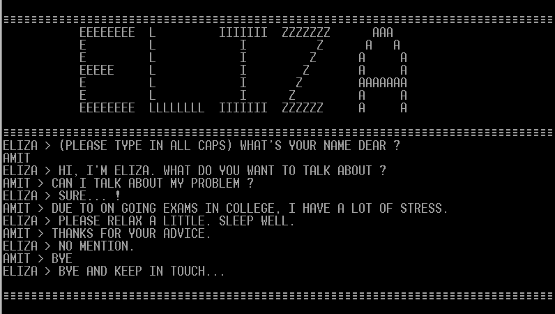
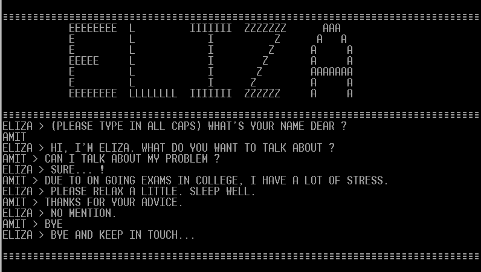

[1]Nonlinearity and Literary Theory — espen aarseth, 1994
[2]From Computer Power and Human Reason — Joseph Weizenbaum, 1976
[3]ELIZA — Joseph Weizenbaum, 1964-1966
Hidden images in highlighted text, Neal Agrawal, 2019
FUKT Magazine No. 18 - The System Issue, Björn Hegardt, 2019
Mars on Earth, Cassandra Klos, 2015
Forest on Location, Persijn Broersen & Margit Lukáscs, 2018
ELIZA, Joseph Weizenbaum, 1964-1966
afternoon, a story, Michael Joyce, 1990
M: I do not for a moment believe that my constructed binarism of the nonlinear text and the linear text or any of the other perspectives in this essay are any more free of a metaphysics than any previous textual theory
1
G: the ELIZA program was the spread of a belief that it demonstrated a general solution to the problem of computer understanding of natural language.
2
G: I had tried to say that no general solution to that problem was possible, i.e., that language is understood only in contextual frameworks
2
M: In other words, there is a systematic contract between text and user, like the causal one that exists in the real world and which, unlike fictions, can be empirically tested.
1
G: For the only certain knowledge science can give us is knowledge of the behavior of formal systems, that is, systems that are games invented by man himself and in which to assert truth is nothing more or less than to assert that, as in a chess game, a particular board position was arrived at by a sequence of legal moves.
2
M: Already free of narrative, this Baudrillardian nightmare—if that is what it is (compare Moulthrop, “Hypertext and ‘the Hyperreal’”)—promises many more escapes: from plot and plotters (authors and author-machines), from genre and contra-generity, and from the social self. If it succeeds, the textual pleasure machine could be said to have escaped even from simulation and become an emulation, a “supplement” as dangerous as they come.
1
M: Simulations are somewhere in between reality and fiction: they are not obliged to represent reality, but they do have an empirical logic of their own, and therefore they should not be called fictions. Unlike fictions, which simply present something else, cybertexts represent something beyond themselves.
1
M: In the case of cybertexts such as Adventure and TinyMUD, the most obvious choice, fiction, is not obvious enough. Adventure invites a belief from the user, but this is not the same belief or suspension of disbelief that must be sustained by the user of realistic or fantastic novels.
1
G: in order to participate in and understand what is happening on the stage, must for a time pretend to himself that he is witnessing real events.
2
M: In addition to its visible words and spaces, which we may call the script, a text includes a practice, a structure or ritual of use.
1
G: the program was constructed in a two- tier arrangement, the first tier consisting of the language analyzer and the second of a script. The script is a set of rules rather like those that might be given to an actor who is to use them to improvise around a certain theme.
2
M: A nonlinear text is an object of verbal communication that is not simply one fixed sequence of letters, words, and sentences but one in which the words or sequence of words may differ from reading to reading because of the shape, conventions, or mechanisms of the text.
1
M: the linear text may be seen as a special case of the nonlinear in which the convention is to read word by word from beginning to end.
1
M: Thus, it is not the plot, or the narrative, or any other well- known poetic unit that will be our definitive agency but the shape or structure of the text itself. A narrative may be perfectly nonlinear (for example describing a sequence of events in a repetitive or nonsequential way) and yet be represented in a totally linear text.
1
M: the linear can flirt with nonlinearity, but the nonlinear cannot lie and pretend to be linear.
1
P: In what way?
3
P: Can you think of a specific example?
3
P: I am sorry to hear you are depressed.
3
P: What resemblance do you see?
3